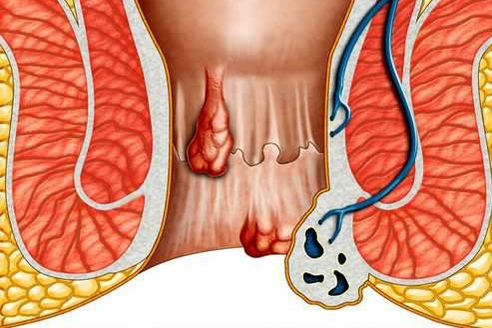

3.jula 2020
Hemoroidi su uzrok raka rektuma! Nakon 2 godine bolesti, 77% pacijenata ima rak! Kako se spasiti - intervju sa glavnim ruskim proktologom.
Od urednika: Prema SZO, hemoroidi su jedna od najopasnijih bolesti danas. U roku od 2 godine od pojavljivanja prvih znakova hemoroida, kancerozni tumori se javljaju kod 77% pacijenata. 4 od 5 pacijenata umre u roku od 10 godina. Zbog brzog širenja nezdravog načina života među stanovništvom, hemoroidi su sada jedna od najopasnijih bolesti.
Od urednika: Prema SZO, hemoroidi su jedna od najopasnijih bolesti danas. U roku od 2 godine od pojavljivanja prvih znakova hemoroida, kancerozni tumori se javljaju kod 77% pacijenata. 4 od 5 pacijenata umre u roku od 10 godina. Zbog brzog širenja nezdravog načina života među stanovništvom, hemoroidi su sada jedna od najopasnijih bolesti.
- Dobar dan, Mihail Sergejevič. Htela bih odmah da vas pitam - da li su ovi šokantni brojevi tačni?
—SZO je najuglednija međunarodna medicinska organizacija. Da budem apsolutno precizan, ovo je jedina zvanična međudržavna struktura u oblasti medicine. I naravno, u potpunosti verujem njihovim ocenama situacije. Štaviše, naša sopstvena statistika je u skladu sa podacima koje pokazuje SZO.
Zaista, oko 77% obolelih od hemoroida razvije rak u prve dve godine bolesti. A samo 1 od 5 preživi nakon 10 godina sa hemoroidima. Brojevi vas bukvalno zgranu od užasa. Pogotovo ako uzmete u obzir da hemoroidi sada postaju sve učestalija bolest. Svake godine dobijamo sve više novih pacijenata.
- Zapravo ispada da od 100 bolesnih ljudi u proseku 82 umre od te bolesti u narednih 10 godina? Da li se mogu nekako spasiti?
—Da tačno. Neki - od karcinoma, što dovodi do hemoroida. Deo - zbog brojnih drugih komplikacija bolesti, koje se manifestuju na različite načine. Naravno da ih je moguće spasti. Za to je potrebna pravovremena pomoć, a u kasnijim fazama i operacija. Glavni problem hemoroida je to što ljudi ne traže tako često pomoć. Čak i ako to urade, daleko je od toga da su uvek spremni na lečenje ili operaciju. Razmislite - 77% obolelih od hemoroida oboli od raka u roku od dve godine. Veoma je važno lečiti hemoroide pre nego što dovedu do raka rektuma.
Većina pacijenata uopšte ne primeti bolest dok ne bude kasno. A kad odu kod doktora, ponekad im se jednostavno ne može pomoći. Glavni razlozi su stidljivost, nespremnost da se izdvoji vreme i bolni postupak lečenja.
Komplikacije koje nastati sa hemoroidima:
-
- Paraproktitis;
-
- Tumori karcinoma;
-
- Flegmon karlice;
-
- Sepsa;
-
- Nekroza zadavljenih čvorova unutrašnjih i spoljašnjih hemoroida;
-
- Nestabilnost ispalih čvorova hemoroida;
-
- Tromboza čvorova hemoroida.
Skoro svi vode u smrt. Međutim, najopasniji su karcinomi. Obično, kada se otkriju, u suštini je prekasno za izlečenje. Evo, na primer, rezultata skeniranja dva pacijenta, u čije se pokušaej spašavanja uključio lekar sa Instituta za proktologiju. Nažalost, oba pacijenta su umrla.
Первый - мужчина, работавший в офисе. Рак прямой кишки начался у него через 1,5 года после появления геморроя. Течение болезни было стремительным и было замечено слишком поздно.

Prvi je čovek koji je radio u kancelariji. Rak rektalnog karcinoma počeo je kod njega 1,5 godina nakon pojave hemoroida. Tok bolesti bio je brz i primećen je prekasno.
"77% obolelih od hemoroida razviju rak u roku od dve godine. Veoma je važno lečenje hemoroida pre nego što dovede do raka rektalne kosti."
—Postoje li mogućnost lečenja hemoroida koje možete vršiti kod kuće?
—Ako govorite o raznim vrstama "narodnih preparata", onda u 100% slučajeva samo pogoršavaju situaciju, umesto da pomognu pacijentu. Ne bih preporučio njihovo korišćenje za lečenje hemoroida. Oni neće popraviti situaciju, već će je samo pogoršati i biće gore nego ranije.
Jedini preparat koji je pogodan za celokupno lečenje hemoroida kod kuće i koji bih vam mogao preporučiti je posebna antihemoroidna krema "HEMATIN". Ovo je jedinstven ruski proizvod, za koji se doslovno grabe u inostranstvu. Sada je ovaj preparat najefikasniji u svojoj kategoriji. Omogućuje vam da se oslobodite hemoroida kod kuće, bez korišćenja hirurgije. Istovremeno, kod 93% pacijenata hemoroidi potpuno nestaju, bez ikakvih nuspojava i bolest nakon lečenja više se ne manifestuje.
Preparat su razvili srpski specijalisti pod pokroviteljstvom Ruske akademije nauka. To je omogućilo formiranje jedinstvenog tima, fuzije teorijskih naučnika i lekara koji se svakodnevno bave hemoroidima. Rezultat je izuzetno efikasan preparat. Krema "HEMATIN" je definitivno najveći pomak u lečenju hemoroida u poslednjim decenijama.
- Ako je preparat tako efikasan, čini se da će vrlo brzo hemoroidi praktično nestati?
- Nažalost, u stvarnosti stvari nisu baš takve. Lečenje hemoroida, proizvodnja preparata, operacije - sve je to ogromna suma novca. Naravno, postoji moćan farmaceutski lobi koji može da ometa masovnu distribuciju kreme. To se posebno odnosi, nažalost, za našu zemlju. Na primer, nijedan od velikih lanaca apoteka nije uzeo kremu za sebe, jer su želeli da povećaju njenu vrednost 10-20 puta na prodaju. Razmislite o tome - 10-20 puta.
Stoga se sada preparat može kupiti samo u nekim apotekarskim lancima. Po pravilu, to su male regionalne apoteke koje pristaju na saradnju. Sve apoteke koje se bave prodajom preparata od morskih pasa odbile su da prodaju ovaj preparat. Mada se, naravno, nadamo da će se pre ili kasnije krema HEMATIN naći u velikim lancima. Štaviše, sada se proučava mogućnost primene ovog preparata u državnom sistemu zdravstvene zaštite - od velikih specijalizovanih centara do regionalnih klinika. Ministarstvo zdravlja izuzetno je zainteresovano za ovu priliku.
Treba shvatiti da razvojni tim i Ruska akademija nauka nisu postavili novac kao svoj cilj. Glavni zadatak u stvaranju preparata je ublažavanje situacije sa masivnom bolešću hemoroida. I spašavanje ljudskih života. Stoga je teško da se preparat nađe na policama apotekarskih lanaca koji samo žude za brzim i lakim novcem.
- Ispada da je krema HEMATIN dostupna samo nekolicini ljudi?
Ako govorimo o lancima apoteka, onda da - nažalost, za sada se preparat može kupiti samo u pojedinačnim apotekama, koje se može nabrojati na prste. Ali, naravno, RAN nije mogao ostaviti situaciju ovakvom, oni razumeju da preparat treba da bude što je moguće dostupniji. Stoga je prodaja preparata organizovana putem interneta, na posebnoj veb stranici. Išao sam da ga vidim i bio sam izuzetno zadovoljan kako je sve odrađeno. Programeri su pokušali da organizuju sve jednostavno i jasno - porudžbina se postavlja putem interneta i plaća se tek nakon prijema i verifikacije. Dostava - kurirskom ili uobičajenom poštom. Odnosno, ljudi koji naručuju kremu nemaju rizik i ne moraju da plaćaju unapred. Ovo se posebno odnosi na kategoriju pacijenata koji retko kupuju na Internetu
Za sada je kupovina dostupna samo na veb sajtu, ali Ministarstvo zdravlja upravo donosi poseban program za borbu protiv hemoroida, koji uključuje pojavu HEMATIN kreme u svim klinikama u zemlji. I nakon toga, mislim da će se moći postići dogovor s velikim lancima apoteka.
- Možda biste želeli nešto da kažete našim čitaocima pre nego što završimo intervju?
Jedino što bih hteo da kažem je da ako imate hemoroide, čak i u početnoj fazi, nemojte misliti da će bolest nestati sama od sebe. Jednog dana možete se probuditi sa rektalnim tumorom. A to u najboljem slučaju znači mučno i bolno lečenje. U najgorem slučaju smrt. Ako ne želite da posetite lekara ili jednostavno nemate vremena za to, koristite rusku kremu HEMATIN. Posebno je formulisna za lečenje hemoroida kod kuće i neverovatno je efikasna. Zapamtite - imate samo jedan život!
PS: Zamolili smo Mihaila Sergejeviča da napravi dodatni popust za naše čitaoce. Našli smo se na pola puta i sada svi mogu kupiti HEMATIN kremu sa dodatnih 50% popusta.
Intervjuisala Svetlana Kotova
Fotografije iz otvorenih izvora
 mobilne
mobilne